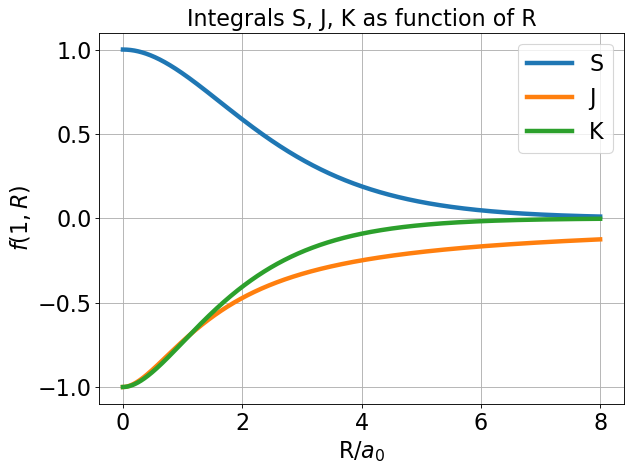
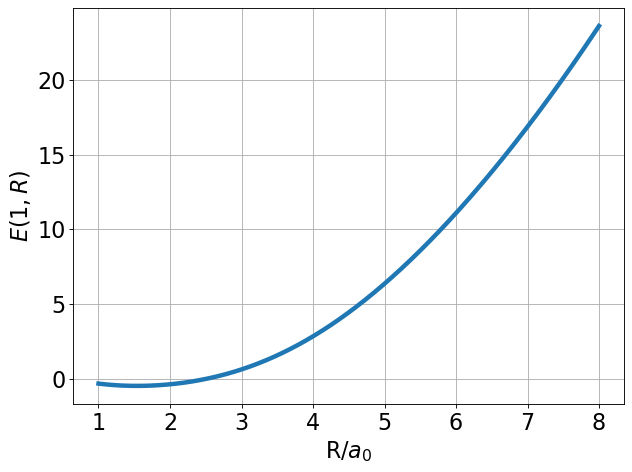
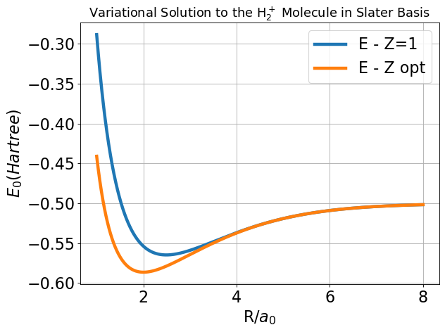
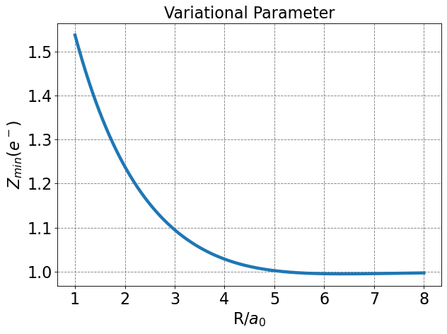

5.2.8. The H\(_2^+\) Molecular Ion in a Variational Approximation#
We are considering the \(H_2^+\) molecular ion with Born–Oppenheimer non-relativsitic Hamiltonian:
where \(r_A\) is the distance between the electron and nucleus (proton) \(A\), \(r_B\) is the distance between the electron and nucleus (proton) \(B\), and \(R = |\vec R_A - \vec R_B|\) is the distance between the two nuclei (protons). The first term in this Hamiltonian is the kinetic energy operator for the electron, the second term is the Coulombic attraction between the electron and nucleus \(A\), the third term in the Coulombic attraction between the electron and nucleus \(B\), and the fourth term, \(\frac{1}{R}\), is the Coulombic repulsion between the two nuclei.
For this system, we consider the following trial wavefunction
where \(1s_A\) and \(1s_B\) denote hydrogen-like 1s functions centered on nucleus \(A\) and \(B\), respectively, and are given by
where \(R_A\) and \(R_B\) are the positions of nuclei \(A\) and \(B\), respectively. Note that \(1s_A\) and \(1s_B\) are individually normalized but the overall wavefunction \(\Psi\) is not.
Using this trial wave function it can be shown that
The numerator in this expression can be simplified to be
The last equality holds because the first two terms in the top line are equivalent because of the symmetry of the problem (functional forms of the 1s-like wavefunctions are the same on the two nuclei) and the last two terms are equivalent because of the Hermitian nature of the Hamiltonian. It can be shown that:
where \(S(Z,R)\), \(J(Z,R)\) and \(K(Z,R)\) are the overlap, Coulomb and exchange integrals, respectively. You will show for homework that these are:
For the denominator:
The last equality holds because the first two terms in the top line are equivalent and normalized and the last two terms are equivalent because of the basis functions are real valued.
Plugging this all back in to the energy equation yields:
Below, I have written python functions to evaluate each integral as a function of both \(Z\) and \(R\) as well as function for the energy as a function of \(Z\) and \(R\). Note that the energy function calls the other three functions.
import numpy as np
def S(Z,R):
ZR = Z*R
return np.exp(-ZR)*(1+ZR + ZR**2/3)
def J(Z,R):
ZR = Z*R
return Z*(np.exp(-2*ZR)*(1+1/ZR)-1/ZR)
def K(Z,R):
ZR = Z*R
return -Z*np.exp(-ZR)*(1+ZR)
def E(Z,R):
num = 0.5*Z**2*(1-S(Z,R)) - Z + J(Z,R) + (2-Z)*K(Z,R)
denom = 1+S(Z,R)
return num/denom + 1/R
def E_RZ(R,Z):
num = 0.5*Z**2*(1-S(Z,R)) - Z + J(Z,R) + (2-Z)*K(Z,R)
denom = 1+S(Z,R)
return num/denom + 1/R
import matplotlib.pyplot as plt
R = np.arange(0.001,8,0.001)
Z = 1
plt.figure(figsize=(8,6),dpi= 80, facecolor='w', edgecolor='k')
plt.tick_params(axis='both',labelsize=20)
plt.grid( True)
plt.plot(R, S(Z,R),lw=4, label="S")
plt.plot(R,J(Z,R),lw=4,label="J")
plt.plot(R,K(Z,R),lw=4,label="K")
plt.xlabel(r'R/$a_0$',fontsize=20)
plt.ylabel(r'$f(1,R)$',fontsize=20)
plt.title("Integrals S, J, K as function of R",fontsize=20)
plt.legend(fontsize=20)
plt.tight_layout()
plt.show();

We should do a quick check that the integral functions are correct. Above, I plot \(S(1,R)\), \(K(1,R)\), and \(J(1,R)\) for \(R\) ranging from 0 to 8. Note the asymptotic behavior of these functions:
Next we check the energy. We start with \(Z\) fixed at 1 (\(Z=1\)) to check our work.
R = np.arange(1,8,0.001)
Z = 1
plt.figure(figsize=(8,6),dpi= 80, facecolor='w', edgecolor='k')
plt.tick_params(axis='both',labelsize=20)
plt.grid( True)
plt.plot(R, E(R,Z),lw=4, label="E")
plt.xlabel(r'R/$a_0$',fontsize=20)
plt.ylabel(r'$E(1,R)$',fontsize=20)
plt.tight_layout()
plt.show();

from scipy.optimize import minimize
R_min = minimize(E_RZ,2.2,args=(1.0)).x[0]
E_min = E_RZ(R_min,1.0)
print(R_min, E_min)
2.4928041367495024 -0.5648309923491205
We see from the plot and code output above that the predicted bond distance for this model of H\(_2^+\) is 2.493 Bohr with a minimum energy of -0.56483 Hartree. This equates to a bond stabilization energy of \(-0.56483 - 0.5 = -0.06483\) Hartree (\(-40.7\) kcal/mol).
These are not actually in great agreement with the “exact” values of 1.999 Bohr and -0.1 Hartree. But the simple approach outline here does give qualitative agreement and is a useful model for generalizing to other molecules.
We can do better by treating \(Z\) as a variational parameter at every nuclear separation.
from scipy.optimize import minimize
R = np.arange(1,8,0.001)
plt.figure(figsize=(8,6),dpi= 80, facecolor='w', edgecolor='k')
plt.tick_params(axis='both',labelsize=20)
plt.grid(True)
E_Z_opt = np.empty(R.size)
Z_opt = np.empty(R.size)
for i, r in enumerate(R):
Z_opt[i] = minimize(E,1.0,args=(r)).x[0]
E_Z_opt[i] = E(Z_opt[i],r)
plt.plot(R,E(1,R),lw=4, label=r'E - Z=1')
plt.plot(R,E_Z_opt,lw=4, label=r'E - Z opt')
plt.xlabel(r'R/$a_0$',fontsize=20)
plt.ylabel(r'$E_0 (Hartree)$',fontsize=20)
#plt.ylim(-0.6,-0.2)
plt.legend(fontsize=20)
plt.title(r'Variational Solution to the H$_2^+$ Molecule in Slater Basis',fontsize=16)
plt.tight_layout()
plt.show();

Note that the variational parameter \(Z\) is allowed to change at every value of \(R\). I saved the optimal \(Z\) as a function of \(R\) and plot it below. Note the asymptotic behavior.
R = np.arange(1,8,0.001)
plt.figure(figsize=(8,6),dpi= 80, facecolor='w', edgecolor='k')
plt.tick_params(axis='both',labelsize=20)
plt.grid( which='major', axis='both', color='#808080', linestyle='--')
plt.plot(R, Z_opt,lw=4, label=r'$Z_{min}$')
plt.xlabel(r'R/$a_0$',fontsize=20)
plt.ylabel(r'$Z_{min} (e^-)$',fontsize=20)
plt.title(r'Variational Parameter',fontsize=20)
plt.tight_layout()
plt.show();

def E_x(x):
R = x[0]
Z = x[1]
num = 0.5*Z**2*(1-S(Z,R)) - Z + J(Z,R) + (2-Z)*K(Z,R)
denom = 1+S(Z,R)
return num/denom + 1/R
R_min, Z_min = minimize(E_x,[2.0,1.3]).x[:2]
E_min = E_RZ(R_min, Z_min)
print(R_min, Z_min, E_min)
2.003255192499619 1.2380392182347302 -0.5865065020781715
Now we determine the position and energy of the new minimum. We see that allowing \(Z\) to be a variational parameter lowers the energy and shifts the position of the minimum. The new values are
This equates to a bond stabilization energy of \(-0.5865 - 0.5 = -0.0865\) Hartree (\(-54.3\) kcal/mol).
These are closer to the exact values of 1.999 Bohr and -0.1 Hartree.